I'm an AI Product Builder focused on turning real user problems into practical LLM-powered products. I work across product discovery, RAG, prompt design, evaluation rubrics, user flows, and fast prototyping. Right now I'm co-building two stealth AI products with Dr. Ranveer Chandra — AgriSathi, an AI advisory platform for Maharashtra farmers, and AI², an AI-first learning platform — both moving from early prototypes into working AI systems.
Each teardown has two layers — a 2-minute summary and a full deep dive. Start with the summary, go deeper if you want.
They've made a real architectural bet. But the execution feels built for enterprise trust, not for traveler delight.
I was trying to plan a trip and decided to use MakeMyTrip's new Myra 2.0. I went in as a frequent traveler, not as a product observer — so the experience hits differently. I wasn't analyzing it for a case study while using it. I was genuinely trying to plan something, and the gaps I noticed were the gaps a real user hits.
I also compared it to how ChatGPT handles the same travel planning task. That comparison is useful because it shows what's possible with the same underlying AI technology when the UX decisions are made differently.
MakeMyTrip's original product was: search → filter → listing → checkout. They added Myra 1.0, which was a chatbot layer on top of the same flow — it had search, limited recommendation filtering, and still ended at checkout. That wasn't really a new product. It was the same product with a chat window on the side.
"Myra 2.0 is trying to become a negotiation interface, not a navigation interface. That's the right bet."
Myra 2.0 is genuinely different. The flow is now: intent conversation → agentic orchestration → transaction. You start by telling it what you want in natural language. It figures out what you mean, builds options, and guides you toward a booking. The UI is conversation-first, with voice as a primary input. That's a real architectural change, not just a cosmetic one.
The reason this makes sense for MakeMyTrip specifically is the category. Travel planning is high-anxiety. People are spending real money, making decisions that affect their time off, and dealing with options that are hard to compare. A conversational interface that feels calm, trustworthy, and like it understands what you actually want — that's the right product for this category. The redesign signals they understand this. The execution is still catching up.
You open Myra 2.0 and start typing or speaking. It asks clarifying questions — where are you traveling from, how many days, who's coming, what kind of experience. That part is good. It feels like talking to a travel agent who's actually listening.
Then it responds. And this is where the experience breaks down. Instead of giving you something scannable and visual — cards, a route map, collapsible options — it gives you a long blog-style response. Full paragraphs. Emojis. Detailed explanations nobody asked for. The AI is clearly optimized to seem helpful and thorough, but the output format doesn't match how people actually make travel decisions.
When I compared the same trip planning query on ChatGPT, the response was more visual and structured — day-by-day cards, a breakdown of costs, suggestions organized spatially. It felt easier to process. Not because the underlying intelligence was better, but because the UX decisions were more considered. MakeMyTrip has the same technology. They're making different choices about how to present it.
The map on the right side is genuinely useful. Travel is geospatial — you're thinking about distances, routes, how things connect. Having the map visible while you plan helps orient you. But the map is static. You can see where things are, but you can't do anything with it. You can't drag a route, add a stop, or build your itinerary through the map itself. It's a missed opportunity that sits right in front of you the whole time.
Putting voice at the center of Myra 2.0 is a real bet. It's not just a microphone icon in the corner — it's positioned as a primary way to interact. This makes sense for the Indian market specifically. People search in Hindi, Telugu, Tamil, mixed-language queries, regional accents. If the voice recognition is genuinely good at understanding dialects and giving back accurate, contextual answers — that's a real moat. The question is whether the comprehension quality is actually there, or whether it's voice input feeding the same text interface.
Right bet for the market · Execution is the questionThe redesign feels intentional about being calm. Segmented interfaces, clear blobs of information, operational reliability signals. In a high-anxiety category, this is the right call. When someone is booking a ₹50,000 international trip, the last thing they want is an interface that feels chaotic or uncertain. MakeMyTrip is designing for trustworthiness first. That's the right principle. The execution — the long text blocks, the sycophantic tone — works against it in practice.
Right design principle · Execution partially undermines itThe response format is the biggest problem I noticed. Long paragraphs, emojis, over-explanation. Travel planning involves a lot of visual and spatial processing — you're comparing options, imagining places, thinking about routes. That kind of decision-making needs cards, visuals, maps, and collapsible sections — not essays. ChatGPT's travel planning response is better structured not because it's smarter, but because someone thought harder about how people actually process travel information.
Biggest UX gap · Wrong format for the decision typeHaving the map visible is genuinely useful. It helps you stay oriented spatially while you're planning. But it's static. You can see hotel locations and city markers. You can't plan through it. You can't drag your route, add stops, or build an itinerary spatially. For a geospatial category like travel, the map should be the primary planning surface — not a sidebar decoration.
Useful but passive · Biggest missed opportunity in the productThis is a consumer app, but it's clear that the product decisions are being made for enterprise customers — corporate travel accounts, travel agents, B2B clients. The interface is reliable and legible, but it lacks the energy and delight that a traveler planning a personal trip actually wants. When I'm booking a trip, I'm also excited. I want to feel the dopamine hit of seeing a beautiful destination, exploring options, imagining the experience. The current interface feels like a business tool that happens to also work for personal travel — not the other way around.
Consumer app built for enterprise · Traveler experience suffersGoogle Travel and Google Flights remain the default for most people starting travel research because the information density is high and the visual structure is good. Booking.com and Airbnb have stronger visual experiences for accommodation. In the AI travel space, startups like Roam Around and Layla are building AI-first travel planners from scratch — no legacy booking infrastructure to work around, which means they can make faster UX decisions. The risk for MakeMyTrip is being stuck in the middle: too legacy to move as fast as AI-native startups, too consumer-facing to win purely on enterprise reliability. Myra 2.0 is a real attempt to escape that trap. Whether it succeeds depends on closing the gap between the architectural bet and the execution.
The technology is not the hard part anymore. MakeMyTrip has access to OpenAI's models. They have the same capabilities as any AI-native startup. The gap between what's possible and what's shipped isn't a technology gap — it's a UX and product decision gap. We know LLMs can do a lot. The question is what decisions you make about how to present that capability to a user.
Moving the needle means delivering value to the actual user, not just to the business. Myra 2.0 feels like it was designed to satisfy enterprise clients and demonstrate AI capability to stakeholders. That's useful, but it's not what drives retention and word-of-mouth among real travelers. The products that win in consumer AI are the ones that make the user feel something — excitement, confidence, clarity. MakeMyTrip has the infrastructure, the data, and now the AI. What it needs is a clearer commitment to the traveler's experience over the enterprise client's requirements.
Used MakeMyTrip's Myra 2.0 to plan a real trip. Compared the experience directly with ChatGPT's travel planning output for the same query. Observed the UI across conversation, map, and booking flows. Screenshots taken during an active planning session. All interpretations are my own — no inside information on MakeMyTrip's roadmap or OpenAI partnership details beyond what's publicly announced.
The limits and cost hit hardest exactly when Claude is working best — that's the central tension of the product right now.
When I look at what Anthropic has actually shipped — Projects, Artifacts, extended thinking, Skills, MCP connectivity, the API surface — I see a product moving away from the chat paradigm toward something more like a persistent AI workspace. Projects give persistent context. Artifacts let you build inside the conversation. MCP pulls in real tools and data. Extended thinking trades speed for depth. None of these are chat features. They're workspace features.
"Claude is not trying to give you the fastest answer. It's trying to give you the right environment to do serious work."
What Anthropic is betting on is that the users who matter most don't want a faster chatbot. They want a better thinking and building environment. Every feature shipped in the last year is consistent with that bet.
A builder's Claude journey: set up a Project with system context and relevant files, start a session, use Plan Mode to think through architecture before writing code, use extended thinking for hard design decisions, pull in MCP data when needed, build an Artifact to preview output. This is qualitatively different from "open chat, ask question, get answer."
The break point comes mid-session. You're deep in a complex task — the AI has full context, it's reasoning well, you're making progress — and the limit hits. The conversation ends. Context is gone. You're starting over or summarizing manually. This moment is the single biggest product failure in Claude right now, because it hits the users who've invested the most in the workspace setup.
The casual user barely notices limits. The power user — the exact person the workspace bet is designed to serve — hits them hardest and most painfully. That structural inversion is what makes this worth writing about.
Before writing code, Claude shows the implementation direction. I can catch wrong assumptions before they cascade. Redirect before the work is done. This is fundamentally different from "here's the code, good luck." It treats me like a collaborator. The most underrated feature in Claude — and the clearest expression of the workspace thesis applied to coding.
Reasoning before outputWhen I set up a Project with my AgriSathi context — system architecture, user research notes, current sprint — every conversation starts with the full picture. I don't re-explain the system every session. For ongoing work — building a product, researching over weeks — this is the feature that makes Claude feel like a workspace rather than a reset-every-session tool.
Stickiness through contextI've connected Claude to MCPs for tool-based workflows and it changes what the product feels like entirely. Instead of Claude being the thing you talk to, it becomes the intelligence layer inside a larger system — pulling real data, taking real actions. This is a platform bet. The more tools you connect, the more powerful it becomes.
Platform signal · Extensibility creates stickinessArtifacts change the output format from text to something interactive — a component lives in a preview panel, not a code block. The limitation is that Artifacts don't persist meaningfully in Projects across sessions. The workspace context survives. The work output doesn't. This is the most obvious gap in the product right now.
Gap · Artifacts and Projects need to connectExtended thinking trades response speed for reasoning depth — explicitly, as a user choice. It takes longer, uses more tokens, costs more. For architectural decisions, complex research, multi-step system design — it's noticeably better. Shipping this as an explicit toggle tells you who Anthropic thinks their user is: someone who knows the difference between a fast answer and a well-reasoned one.
Depth as a product valueChatGPT with memory and Canvas is the most direct competitor — similar surface area, larger user base, stronger brand recognition among casual users. Cursor and GitHub Copilot compete specifically on the coding side, where Plan Mode is Claude's strongest differentiator. Gemini with its 1M+ context window and Google Workspace integration competes on the enterprise and research side. The interesting dynamic is that Claude is competing on depth while most competitors compete on breadth — a deliberate bet that the serious user market is worth owning, even at the cost of the casual user market.
The chatbot era is ending. Claude with Projects, Artifacts, MCP, and Skills is not really a chatbot anymore. It's an environment. That shift — from conversation to workspace — is the most important transition happening in AI products right now.
The depth-cost problem is the defining challenge. Any AI product that tries to serve serious users will hit this tension: the features that create real value use more compute, cost more, hit limits faster. How companies solve this will define which products win the serious user market. Claude's direction is right. The business model needs to catch up.
Daily Claude user across claude.ai, API, Artifacts, Projects, Skills, and MCP workflows. Used for casual chat, deep research, coding, product architecture, and AgriSathi system design. Compared with ChatGPT and Codex across coding and research tasks. Reviewed Anthropic's feature releases from 2024 onward.
It sells the feeling of "I can finally build my idea myself." That emotional hook is the real product.
The biggest mistake you can make when reading Lovable is thinking it's trying to be a better coding tool. It isn't. The problem it's solving is much more specific: many founders, PMs, designers, and non-technical builders have product ideas but struggle to turn those ideas into something live and usable. The starting problem. The gap between "I have an idea" and "I have something I can show someone."
"Lovable isn't selling code. It's selling the feeling of 'I can finally build my idea myself.' That emotional hook is the real product."
What Lovable does is abstract the hardest parts of early development — frontend, backend, database, auth, deployment — into a conversational flow. You describe what you want. It builds. You see something working. That loop is fast, and for someone who's never been able to touch a working product before, it's genuinely exciting.
The first-time user journey is the product's strongest moment. You open Lovable, describe your idea in plain language — "a tool that helps freelancers track their invoices" — and within minutes you see a working app in the browser. The emotional beat of that first moment is powerful: this is something you could never have built before, and now it exists. That feeling is the hook.
The second-session journey is where the product gets complicated. You return to iterate, fix something, add a feature. The AI modifies the code. Sometimes it breaks something that was working. You prompt it to fix the break. It fixes it but breaks something else. For non-technical users, this loop can feel opaque — you can see symptoms but not the cause, and you don't have the vocabulary to diagnose precisely.
The launch journey is the biggest gap. You've built something, it looks done, you want to share it. But there's no "before you go live, here's what to check" flow. The app might have exposed API keys, accept any input without validation, or have routes that don't require authentication. The builder has no way of knowing. The journey ends at "it looks done" when it should end at "it's ready."
No setup. No config files. No choosing a framework. The entire product keeps the intimidation of starting as close to zero as possible. For a technical builder, hiding these things is frustrating — you lose control. For a non-technical founder, hiding these things is the entire value. Lovable is reading its user correctly here.
Abstraction as primary UX, not a shortcutThe thing Lovable does better than any competitor is compress the timeline from "I have an idea" to "I have something I can show." That compression is the emotional core. The first working version is when users form their attachment to a product. Lovable owns that moment better than anyone. The challenge is what happens next — when initial excitement meets real limitations.
Strongest competitive advantageLovable generates frontend, backend, database, auth, and deployment together. Much more ambitious than v0 (component-level) or most other tools. The breadth is what makes the "idea → live app" promise real. But breadth creates a quality tradeoff — each layer gets less attention than a specialist tool. The app looks complete. The auth might have gaps. The database schema might not scale.
Breadth enables the promise · Depth is the outstanding debtLovable lets you connect to GitHub and own the generated code. This reduces the fear of lock-in. It also signals something about the evolving ICP: pure non-technical users don't care about GitHub. The integration tells me Lovable is also trying to serve startup founders who want to validate fast but know they'll hand code to engineers eventually.
Trust signal · And ICP signalNo built-in guidance around what you're actually shipping. No security review surface. No warning when a database schema choice might cause problems at scale. No flagging of missing input validation. For a non-technical builder who doesn't know what they don't know, this is the biggest gap. The app looks done. It might not be safe. And the builder has no way of knowing.
The gap between "it works" and "it's ready to ship"v0 (Vercel) is optimized for component-level UI generation — a tool for developers who know what they want and need it fast. Bolt is closer to Lovable in spirit but leans more technical, offering more control surfaces. Replit Agent is broader — collaborative coding, cloud environment, serving developers and learners more than non-technical founders. None of them occupy the same exact cell as Lovable: full-stack, non-technical, emotionally accessible. That distinctiveness is real. But speed is hard to hold as a moat — every competitor is working on the same problem with similar models. If Lovable closes the production readiness gap before competitors, that becomes a much more durable differentiator.
The starting problem is solved. The shipping problem isn't. Lovable and the entire AI codegen category have gotten very good at helping people start building. What nobody has fully solved yet is the "prototype → production-ready" loop. That's where the real product opportunity sits, and whichever tool solves it first will have a much more durable moat than speed.
Accessibility creates a new kind of technical debt. When non-technical builders ship AI-generated apps without understanding what's underneath, they create a new category of technical debt — not from bad engineering decisions, but from uninformed ones. The platforms enabling this have a responsibility to help users understand what they're shipping. Lovable is the most prominent tool in this category, which means this responsibility lands on them most visibly.
Built real projects with Lovable, experimented across different use cases, and compared directly with v0, Bolt, and Replit Agent. Reviewed Lovable's product changelog, case studies, and community discussions. All strategic interpretations are my own — no inside information on Lovable's roadmap.
End-to-end AI products — from problem framing and PRD through system design, evaluation, and deployment. Each project shows the thinking, not just the outcome.
A structured learning companion that helps learners understand what to learn, when to learn it, how to practice it, and how to prove they've learned it — through AI-guided journeys, not endless courses.
Many learners want to learn AI. Almost none have a clear path. They jump between courses, YouTube tutorials, blog posts, and tools — picking up fragments of knowledge that never quite come together into actual skill. They finish courses without being able to apply what they learned. They build small projects without knowing if those projects would actually count in an interview. They study for weeks and still can't answer the question: "Am I actually getting better at this?"
The gap isn't access to content. The gap is structure, practice, feedback, and proof. Learners need to know what to learn next, how to know they've learned it, and how to show someone else they know it. That's the problem AI² is built to solve.
AI² is designed around one insight: learners don't only need content, they need direction, practice, feedback, and proof of skill. Most learning platforms focus on delivering content. AI² focuses on the full loop — what to learn, how to understand it, how to practice it, how to get feedback, and how to convert learning into something a learner can actually show.
The product is built to move learners from passive consumption to active skill-building. Instead of recommending the next video, it builds a personalized learning path based on the learner's goal and current skill level. Instead of just answering questions, it tutors step by step in simple language. Instead of grading quizzes, it generates portfolio tasks and interview prep. Instead of showing completion percentages, it tracks weak areas and adapts the path forward.
It's not an AI chatbot for learning. It's a structured AI learning companion designed around outcomes.
I'm co-building AI² with Dr. Ranveer Chandra — leading the product and AI design side. My focus is on translating a real learner problem into a structured AI product with clear user journeys, AI workflows, evaluation rubrics, and measurable outcomes. Dr. Ranveer Chandra brings deep AI research and domain expertise; I bring the product thinking, user framing, and system design.
Each feature is designed around a specific learner pain point — not just to add AI for the sake of AI.
Creates a structured learning flow based on learner goals and current skill level. Adapts as the learner progresses.
Explains concepts in simple language and guides learners step by step. Conversational, contextual, and patient.
Checks understanding and gives feedback that points to specific knowledge gaps, not just right/wrong scores.
Generates practical tasks learners can build and add to their portfolio — converting learning into proof of work.
Simulates AI/PM interview questions and gives structured feedback on clarity, structure, and accuracy.
Tracks completion, scores, todos, and weak areas. Keeps learners focused on what to do next, not what they've done.
AI² uses AI models to guide learners through structured modules, evaluate their answers, generate practice tasks, provide interview feedback, and track progress. The product combines learning content, user progress data, AI feedback, and evaluation rubrics into a personalized learning experience.
Each step feeds into the next. Skill assessment shapes the path. The path informs what the tutor focuses on. Quiz performance triggers portfolio tasks at the right level. Portfolio tasks shape interview prep. Progress data loops back to adjust the path. The system is designed to keep the learner moving forward through a tight feedback loop, not stuck in any single phase.
From the learner's goal down to measurable, portfolio-ready progress.
This is the part most AI learning products skip. It's easy to generate AI responses. It's much harder to measure whether the learner is actually getting better. AI² is built around clear evaluation rubrics for every learner output — so the system knows when to push forward, when to revisit a concept, and when a learner is genuinely ready for the next step.
The goal isn't to generate more AI output. It's to measure whether the AI is actually helping the learner improve. That measurement is what separates a real learning product from a fancy content delivery system.
AI² is built around one belief: learners don't need more content, they need the full loop. These decisions all follow from that.
Most learning platforms focus on content — they give you videos, articles, or exercises and expect you to figure out the rest. Most AI learning tools are essentially chatbots — you ask questions, they answer. Neither solves the actual problem.
AI² focuses on the full learning loop: what to learn, how to understand it, how to practice it, how to get feedback, and how to convert learning into portfolio-ready proof of skill. It's structured around outcomes, not content delivery. It's designed to make AI useful for clarity, consistency, completion, confidence, and portfolio readiness — not just for generating answers.
"AI² is a stealth AI-first learning platform I'm co-building with Dr. Ranveer Chandra. I lead the product side — discovery, learner journey design, AI feature planning, and evaluation rubrics. The core problem is that learners want to learn AI but get lost across courses, YouTube, and tools without a clear path. AI² gives them a structured, personalized learning journey — with an AI tutor, quizzes, portfolio tasks, interview practice, and progress tracking — all designed around evaluation rubrics that measure whether the learner is actually improving. It's not another AI chatbot for learning. It's a structured learning companion built around outcomes."
Helping farmers get grounded, structured guidance on crops, pests, fertilizer, weather, mandi prices, and government schemes — in simple language they can act on.
AgriSathi first started as a Lovable prototype to test the farmer journey — onboarding, crop/location input, advisory screens, and the overall product flow. That version helped me validate the product direction, but it was mostly UI-first.
I'm now rebuilding AgriSathi into a working AI system with backend logic, RAG-based retrieval, structured advisory outputs, and evaluation guardrails. This shift matters because the first version tested the experience, while the current version focuses on reliability, grounding, and pilot readiness.
Farmers often struggle to get timely, trustworthy, and easy-to-understand guidance — for crop care, pest issues, fertilizer usage, weather risks, mandi prices, and government schemes. The information exists, but it's scattered across PDFs, government websites, advisories, and local sources. None of it is in one place, and most of it isn't in a form a farmer can quickly act on.
The result is that decisions get made late, or based on incomplete information, or by guessing. When you're deciding whether to spray for a pest or wait, or which fertilizer dose to use, or whether to sell now or hold — the cost of a wrong or late decision is real. AgriSathi is built to close that gap between scattered information and a confident decision.
AgriSathi brings agricultural knowledge, real-time data, and AI reasoning into one simple advisory experience. A farmer asks a question about their crop, location, or farming problem in plain language. The system retrieves relevant, trusted knowledge, combines it with the farmer's context and live data, and returns a structured advisory — not just a wall of text.
The key design choice is that the answer isn't free-form. Every advisory follows a structured format: an answer, a warning where relevant, the source it's grounded in, and a suggested next action. This structure is deliberate — it makes the guidance scannable, builds trust through transparency, and always points the farmer toward something they can actually do.
I built this as an AI Product Builder / PM — which for a 0→1 project means doing both the product thinking and the hands-on system design. My focus was translating farmer pain points into an AI product experience that is simple, safe, and useful.
Being honest about the stage: some features are working in the MVP, others are designed and planned. Here's the breakdown.
Farmers can ask crop-related questions in simple language and get a structured response.
Uses trusted agricultural documents instead of relying only on the LLM — grounding answers in real sources.
Every advisory returns answer, warning, source, and next action — scannable and trustworthy.
Answers can consider crop, district, and Maharashtra-specific context.
Manages agricultural documents and knowledge updates feeding the RAG system.
Checks response quality, safety, grounding, and usefulness.
Planned integration for weather-based farming decisions.
Partially designed support for crop price insights to inform sell/hold decisions.
Helps farmers understand and discover relevant schemes they qualify for.
Planned multilingual experience so local farmers can use it in their own language.
AgriSathi uses a RAG-based architecture. Trusted agricultural documents are collected, cleaned, chunked, tagged by crop / topic / region, embedded, and stored in a vector database. When a farmer asks a question, the system retrieves relevant knowledge, combines it with farmer context and live data, and sends it to the LLM to generate a grounded advisory response.
The live data step (weather / mandi / schemes) is partially designed — the core RAG retrieval and structured output are working in the MVP.
From farmer input down to a grounded, structured advisory.
Every one of these came from the same place: farming is a high-stakes, low-margin-for-error category. The decisions reflect that.
For a farming advisory product, a wrong answer isn't just unhelpful — it can cost a farmer real money or a crop. So evaluation focuses heavily on grounding and safety, not just whether the answer sounds right.
AgriSathi is at the MVP / pilot-prototype stage. I've designed and built the core product flow, the RAG-based architecture, the farmer advisory structure, the knowledge ingestion pipeline, and the evaluation approach. The system is planned to support crop management, pest and disease guidance, fertilizer usage, weather-based decisions, mandi price awareness, and government scheme discovery.
Through this project, I worked hands-on across 0→1 product thinking, user empathy, AI system design, grounding, safety, and product evaluation — the full loop of building an AI product from a real problem, not just a feature.
An honest map of where each piece actually stands today.
| Area | Current status |
|---|---|
| Farmer question answering | Built in MVP |
| RAG-based advisory | Built in MVP |
| Structured output: answer, warning, source, action | Built in MVP |
| Crop + district context | Built / partially built |
| Admin document pipeline | Built / partially built |
| Weather integration | Planned / partially designed |
| Mandi price support | Planned / partially designed |
| Government schemes | Planned |
| Marathi support | Prototype / planned |
| Disease detection | Future module / prototype only |
Screenshots from the current MVP — a multilingual, voice-first farmer experience with a 6-step farm profile, live weather, AI advisory, and disease detection.
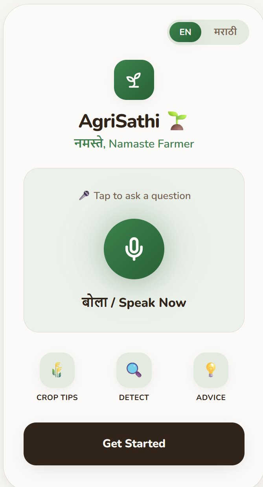
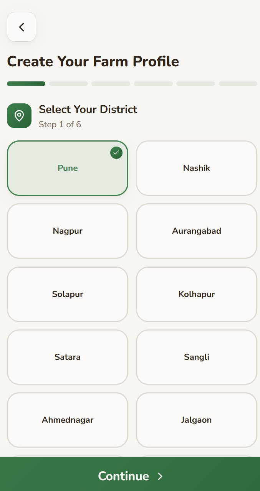
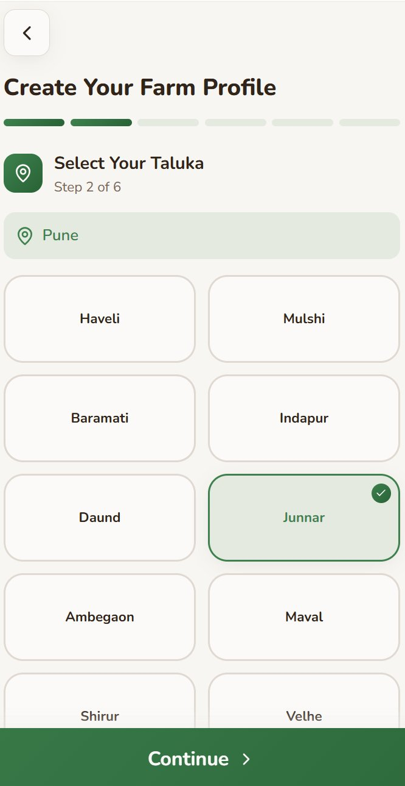
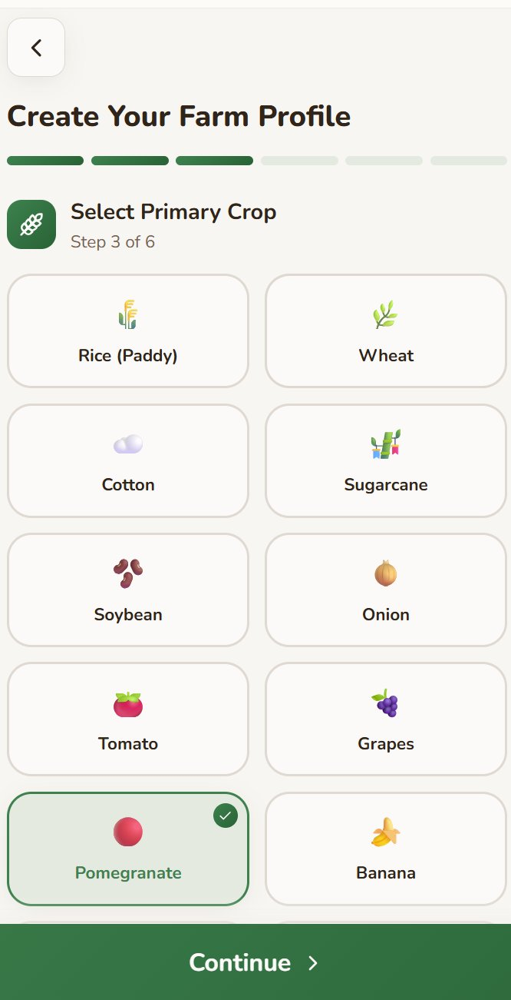
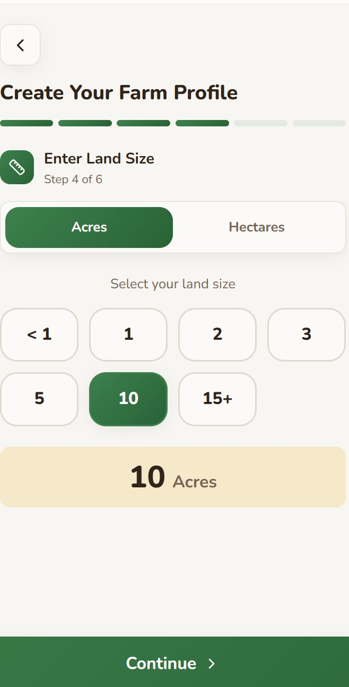
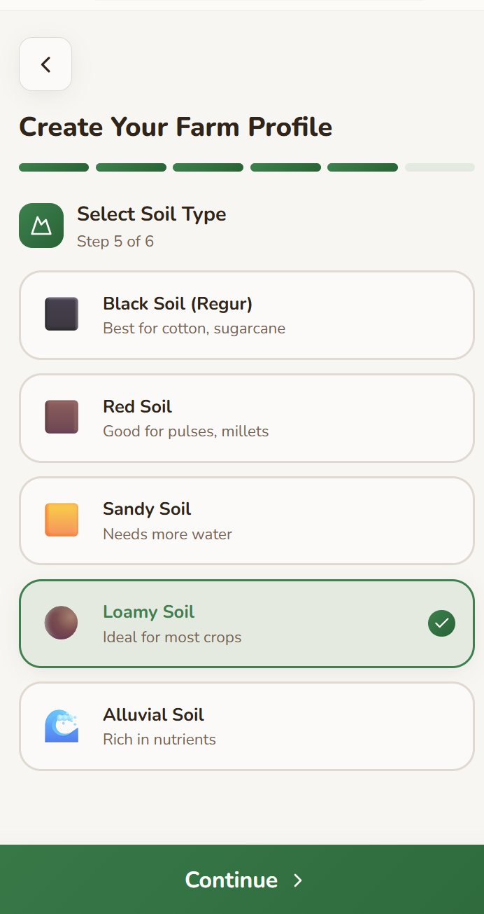
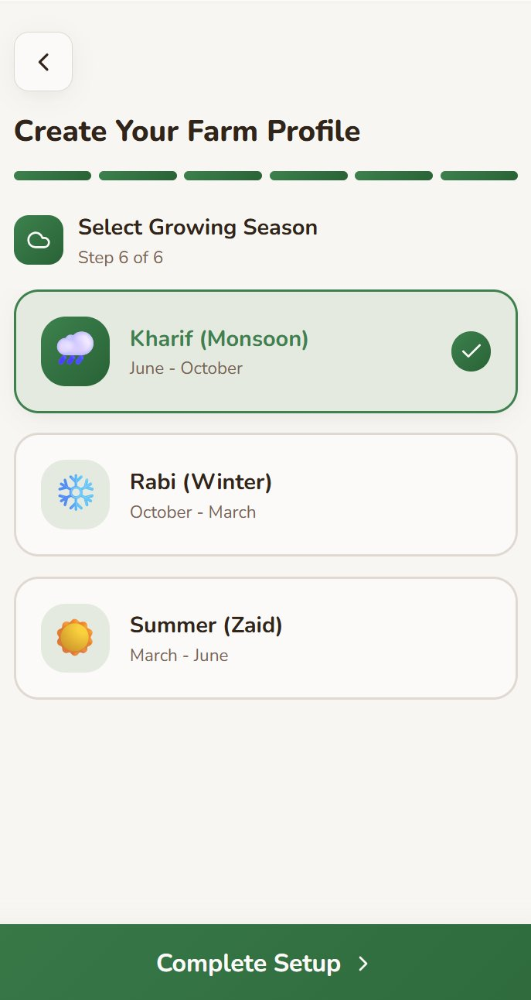
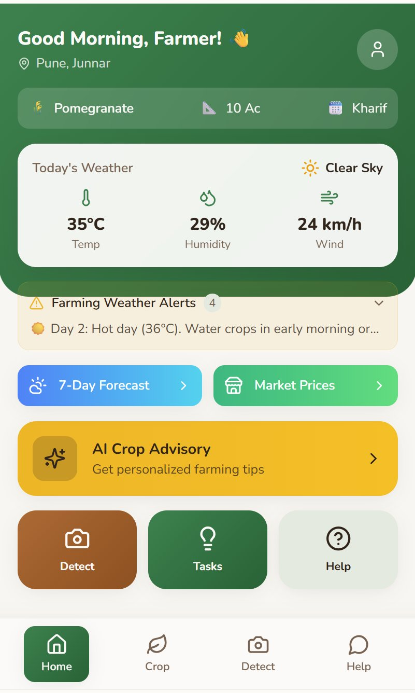
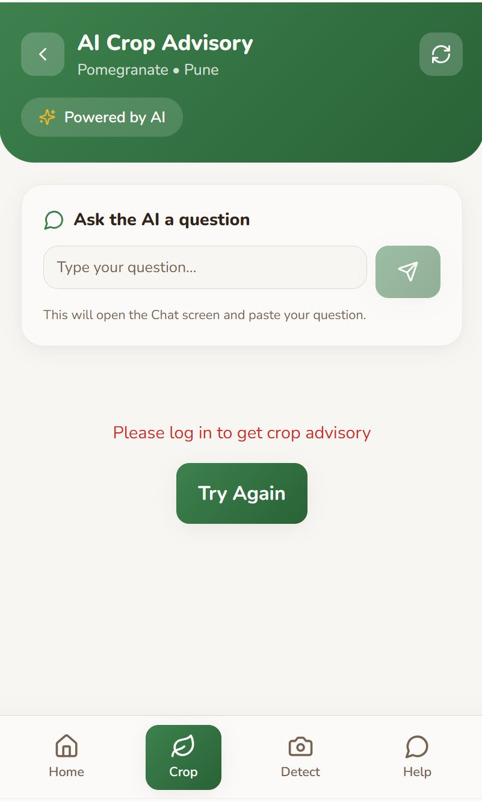
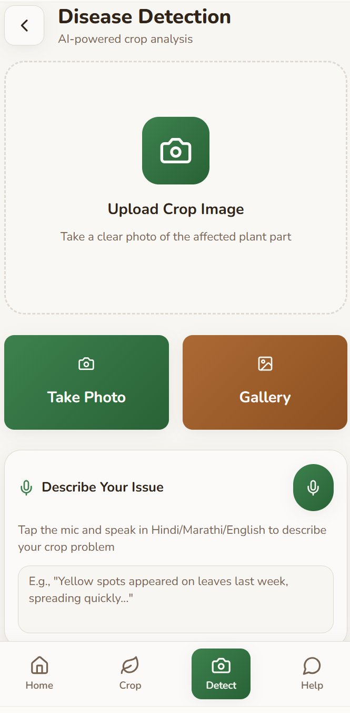
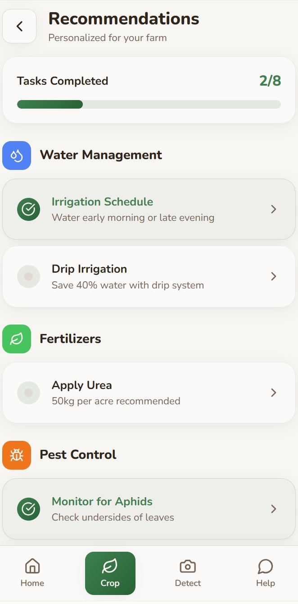
An honest map of what I can do well today, what I'm hands-on building with, and what I'm still learning.
AI Product Builder focused on practical, user-first AI products.
I'm Janhvi — an AI Product Builder coming from the business side: sales, marketing, and client management.
That background matters because it taught me how real people think — where they get stuck, what they ignore, what they trust, and what actually makes them take action. I don't look at AI only as technology. I look at it as a way to solve real user problems in a simple and useful way.
Now I'm applying that thinking to AI products. My strength is taking a messy real-world problem and shaping it into something clear, usable, and practical — using tools and concepts like RAG, prompt design, evaluation rubrics, user flows, and fast prototyping.
Right now, most of my focus is on AgriSathi, an AI advisory platform for farmers in Maharashtra. It first started as a Lovable prototype to test the farmer journey and overall product flow. That version helped me understand what worked, what felt too surface-level, and what needed to become a real system.
Now I'm rebuilding AgriSathi into a working AI product with backend logic, RAG-based retrieval, structured advisory outputs, and evaluation guardrails — so the answers stay grounded, useful, and safe.
Alongside building, I also work on product teardowns, research, and case studies to sharpen my PM thinking. They help me go beyond "this feature is good or bad" and understand the deeper layer — why the product decision was made, what tradeoffs exist, what metrics matter, and what I'd improve if I were building it.
AgriSathi MVP — moving from Lovable UI prototype to a working AI advisory system with RAG, backend flow, and structured farmer responses.
AI product evaluation — building simple rubrics for grounding, safety, usefulness, clarity, and local relevance.
Live data layers — exploring how weather, mandi prices, and government scheme data can improve farmer advisory quality.